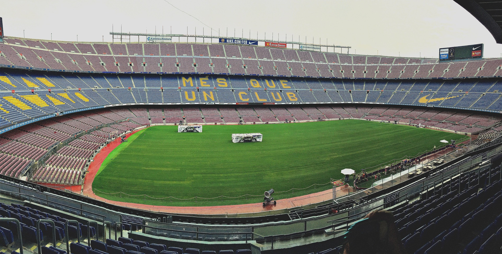
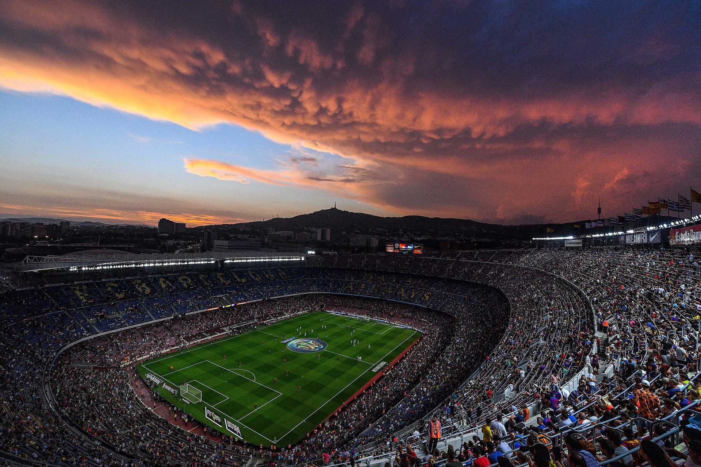

Le Camp Nou
Le plus grand Stade d'Europe
Inauguré en 1957, le Camp Nou est le stade mythique du FC Barcelone. Il représente un symbole de la culture catalane.


En quelques chiffres
- Capacité : 99 354 places
- Année d'inauguration: 1957
- Dimensions du terrain : 105 m x 68 m
- Propriétaire : FC Barcelone
Une enceinte légendaire
Le Camp Nou est bien plus qu'un simple stade. Il est le symbole de l'identité du FC Barcelone et le témoin de nombreux moments historiques.
Depuis 1957, il accueille les supporters blaugranas venus encourager leur équipe.
MES QUE UN CLUB
Plus qu'un club
FC BARCELONE